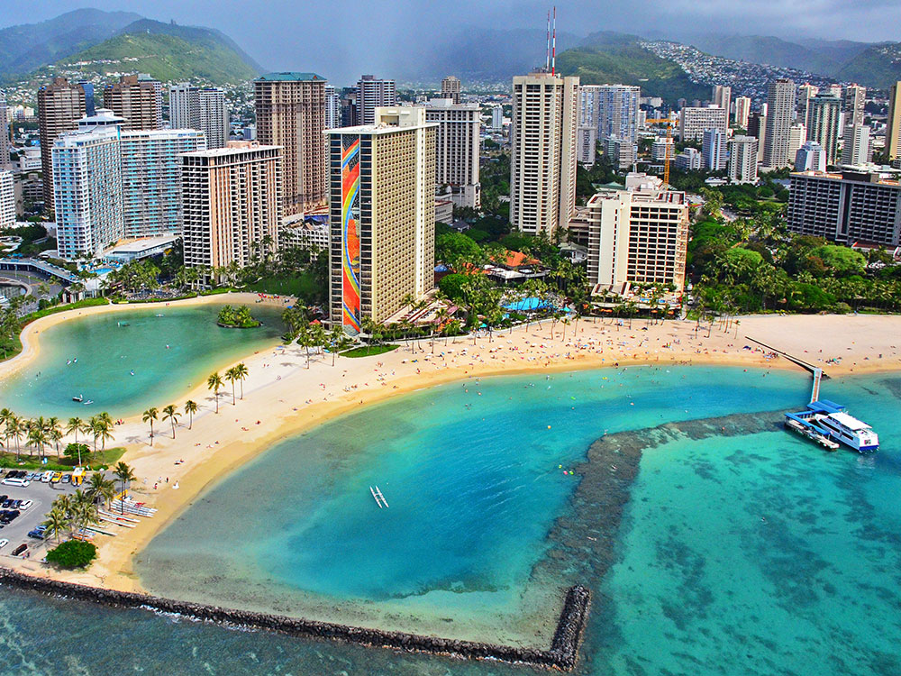
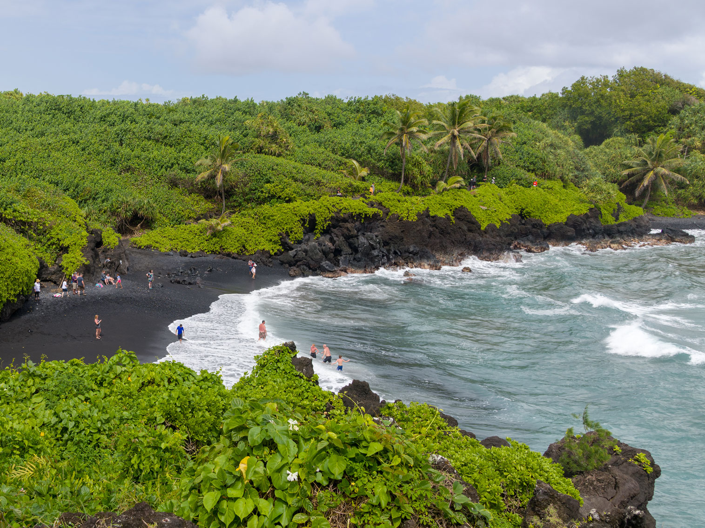

Hawaii Travel Guide
Relax on golden beaches, hike volcanic craters, and snorkel vibrant reefs across Hawaii's tropical islands, rich in Polynesian culture and aloha spirit.
Top Locations
Islands to See in Hawaii

ErgoSum88, Public domain, via Wikimedia Commons; Image Size Adjusted

Oahu★
Volcanic island featuring a mix of urban centers, historic landmarks, tropical beaches, and diverse microclimates shaped by mountain ranges and trade winds.

Theskuj, CC BY-SA 4.0, via Wikimedia Commons; Image Size Adjusted

Maui★
Volcanic island shaped by two massive shield volcanoes and a central valley, featuring lush rainforests, arid coastlines, historic towns, and deep-rooted Hawaiian cultural traditions.
English: NPS Photo, Public domain, via Wikimedia Commons; Image Size Adjusted
.JPG){kind=link}
Hawaii (The Big Island)★
Geologically diverse island featuring active volcanoes, black and white sand beaches, lush rainforests, and high-altitude observatories.
Kauia★
Lush rainforests, dramatic sea cliffs, and cascading waterfalls shape a landscape rich in biodiversity and cultural heritage.
Overview
Hawaii is the only U.S. state made up entirely of islands, a volcanic archipelago of about 1.4 million people in the central Pacific, roughly 2,400 miles from the mainland. Honolulu, on Oahu, is the capital and largest city, and Hawaii became the 50th state on August 21, 1959.
Visitors come for the beaches, surfing, and volcanoes, and for Hawaiian culture, including hula, lei, and the Hawaiian language. Each of the main islands has a different character: Oahu for Waikiki and Pearl Harbor, Maui for resorts and the Road to Hana, the Big Island for active volcanoes, and Kauai for the Na Pali Coast and lush gardens.
Geography
Hawaii's islands are the tops of massive volcanoes built over a hot spot in the Pacific plate, and the oldest islands in the northwest are the most eroded. Mauna Kea on the Big Island, at 13,803 feet (4,205 m), is the highest point, and measured from the sea floor it is the tallest mountain on Earth. The islands have a tropical climate, with wet windward sides, dry leeward coasts, and snow on the highest peaks in winter. The Big Island has active volcanoes, including Kilauea and Mauna Loa.
History
Polynesian voyagers reached Hawaii more than 1,000 years ago and developed a complex society. Captain James Cook arrived in 1778, and King Kamehameha I unified the islands in 1810. Missionaries and sugar planters arrived in the 19th century, and in 1893 American businessmen overthrew Queen Liliuokalani. The United States annexed Hawaii in 1898, and the attack on Pearl Harbor on December 7, 1941, brought the U.S. into World War II. Hawaii became the 50th state in 1959, and tourism has since become its leading industry.
National Protected Areas
Hawaii's national park sites include Hawaii Volcanoes National Park and Haleakala National Park, both with volcanic landscapes. Pearl Harbor National Memorial and the World War II Valor in the Pacific National Monument honor those lost in the 1941 attack. Kalaupapa National Historical Park on Molokai preserves the story of a former leprosy settlement, and Kaloko-Honokohau and Puuhonua o Honaunau National Historical Parks and Puukohola Heiau National Historic Site protect Native Hawaiian sites. The Ala Kahakai National Historic Trail follows ancient paths on the Big Island.
State Parks and Historic Sites
Hawaii's state parks protect some of its best scenery. Na Pali Coast State Wilderness Park has sea cliffs and the Kalalau Trail, and Waimea Canyon State Park is known as the "Grand Canyon of the Pacific." Diamond Head State Monument and Hanauma Bay on Oahu are very popular, Akaka Falls State Park has a 442-foot waterfall, and Iao Valley State Monument on Maui has the Iao Needle. Several parks require advance reservations.
Seasons and When to Visit
Hawaii is a year-round destination. The driest and sunniest weather is from April to October, and the busiest seasons are December to March and the summer. Winter brings big surf to the North Shore of Oahu and humpback whales from December to April, while summer has calmer seas for snorkeling. Spring and fall tend to have lower prices and fewer crowds. Check volcano and surf conditions, respect cultural sites, and keep a safe distance from wildlife such as monk seals and sea turtles.
Oahu
Oahu is Hawaii's most visited island and home to the state capital of Honolulu. Waikiki Beach attracts millions of visitors with its iconic shoreline, resort hotels, shopping, restaurants, and views of Diamond Head. Historic Pearl Harbor remains one of Hawaii's most significant attractions, while downtown Honolulu offers cultural sites such as Iolani Palace and the Bishop Museum. Along the island's North Shore, visitors can watch legendary surf breaks during the winter months, explore charming beach towns, and enjoy a more relaxed atmosphere. Oahu combines urban amenities, cultural attractions, beaches, and outdoor recreation, making it an excellent introduction to Hawaii.
Maui
Maui is renowned for its blend of luxury resorts, scenic drives, beautiful beaches, and outdoor adventure. Highlights include the winding Road to Hana, Haleakala National Park's volcanic summit, seasonal whale watching, and the resort communities of Kaanapali, Wailea, and Kapalua. Visitors enjoy snorkeling at Molokini Crater, exploring waterfalls, relaxing on pristine beaches, and experiencing some of Hawaii's most spectacular sunsets. Maui appeals to honeymooners, families, and nature enthusiasts seeking a balance of relaxation and exploration.
Hawaii Island (The Big Island)
The Big Island of Hawaii is larger than all the other Hawaiian Islands combined and offers extraordinary geographic diversity. Visitors can explore active volcanic landscapes at Hawaii Volcanoes National Park, relax on black-sand beaches, visit coffee farms in the Kona region, and discover waterfalls near Hilo. Mauna Kea and Mauna Loa dominate the skyline, while clear skies and high elevations make Mauna Kea one of the world's premier astronomy destinations. The island's size often requires longer drives, but it rewards travelers with some of the most varied scenery in Hawaii.
Other Hawaiian Islands
The remaining visitor islands offer unique experiences away from Hawaii's busiest tourism centers.
- Kauai is known as the "Garden Isle" and features dramatic scenery including the Na Pali Coast, Waimea Canyon, and lush tropical landscapes.
- Lanai offers luxury resorts, uncrowded beaches, and rugged off-road adventures.
- Molokai provides a quieter, less-developed Hawaiian experience focused on culture, nature, and local traditions.
- Niihau, often called the "Forbidden Island," is privately owned and generally closed to independent tourism.
These islands are primarily accessed via interisland flights, while limited ferry service operates between certain islands.
Places to Stay
Hawaii offers accommodations for nearly every budget and travel style.
- Luxury beachfront resorts
- Boutique hotels
- Vacation rental condominiums
- Family-oriented resort complexes
- Bed and breakfasts
- Hostels and budget accommodations
- Vacation homes and villas
Major resort concentrations can be found in Waikiki (Oahu), Wailea and Kaanapali (Maui), Kona and Kohala Coast (Big Island), and Poipu and Princeville (Kauai). Advance reservations are strongly recommended during holiday periods and peak travel seasons.
Getting Around
Rental cars are the most popular way to explore Hawaii, particularly on Maui, Kauai, and the Big Island where attractions are spread out. Oahu offers the state's most extensive public transportation system, along with ride-share services, taxis, and organized tours. Many resorts provide shuttle services to nearby attractions. Interisland travel is typically accomplished via short commercial flights, while cruises occasionally allow travelers to visit multiple islands during a single vacation.
Wildlife Viewing
Hawaii's isolation has created unique ecosystems and remarkable wildlife viewing opportunities. Visitors may encounter:
- Humpback whales (seasonally)
- Spinner dolphins
- Hawaiian green sea turtles (honu)
- Hawaiian monk seals
- Tropical reef fish
- Manta rays
- Native Hawaiian birds
- Seabirds nesting along coastal cliffs
Popular wildlife viewing locations include Maui's whale-watching waters, Kona's manta ray night dives, Kauai's coastal refuges, and marine protected areas throughout the islands. Visitors are encouraged to observe wildlife responsibly and comply with local regulations protecting endangered species.
Popular Excursions
Some of Hawaii's most memorable activities include:
- Snorkeling at coral reefs and volcanic craters
- Scuba diving with tropical marine life
- Helicopter and airplane sightseeing tours
- Traditional Hawaiian luaus
- Volcano exploration at Hawaii Volcanoes National Park
- Whale-watching cruises
- Sunrise tours atop Haleakala
- Surfing lessons
- Catamaran sailing excursions
- Waterfall hikes
- Zip lining adventures
- Manta ray snorkeling experiences
These excursions are available throughout the islands and appeal to visitors seeking either adventure or cultural immersion.
Hawaiian Cuisine
The cuisine of Hawaii is a fusion of many foods brought by immigrants to the Hawaiian Islands, including the earliest Polynesians and Native Hawaiian cuisine, and American, Chinese, Filipino, Japanese, Korean, Polynesian, Puerto Rican, and Portuguese origins. Plant and animal food sources are imported from around the world for agricultural use in Hawaii. Poi, a starch made by pounding taro, is one of the traditional foods of the islands. Many local restaurants serve the ubiquitous plate lunch, which features two scoops of rice, a simplified version of American macaroni salad and a variety of toppings including hamburger patties, a fried egg, and gravy of a loco moco, Japanese style tonkatsu or the traditional lū'au favorites, including kālua pork and laulau. Spam musubi is an example of the fusion of ethnic cuisine that developed on the islands among the mix of immigrant groups and military personnel. In the 1990s, a group of chefs developed Hawaii regional cuisine as a contemporary fusion cuisine.
Popular foods include:
- Poke - seasoned cubes of raw fish, typically ahi tuna.
- Kalua Pork - slow-cooked pork traditionally prepared in an imu oven.
- Loco Moco - rice topped with hamburger patty, gravy, and eggs.
- Plate Lunch - a local favorite featuring rice, macaroni salad, and a protein entrée.
- Spam Musubi - a popular handheld snack.
- Shave Ice - finely shaved flavored ice dessert.
- Haupia - coconut-based dessert.
- Malasadas - Portuguese-inspired fried pastries.
- Fresh Kona Coffee - grown on the slopes of the Big Island.
- Fresh Tropical Fruit including pineapple, mango, guava, and papaya.
General Trip Pricing
| Travel Type | Typical Price Range (Per Person) |
|---|---|
| Roundtrip airfare from U.S. mainland | $400–$1,500+ |
| Interisland flight | $50–$250+ |
| Hotel accommodations | $150–$800+ per night |
| Luxury resort accommodations | $500–$2,000+ per night |
| Rental car | $50–$150+ per day |
| Luau admission | $75–$250+ per person |
| Helicopter tour | $250–$600+ per person |
| Whale-watching excursion | $75–$200+ per person |
| Snorkeling excursion | $75–$250+ per person |
Travel costs vary considerably depending on season, island selection, accommodations, and activities. Peak holiday periods, summer vacations, and winter whale-watching season generally command the highest prices.
The aboriginal culture of Hawaii is Polynesian. Hawaii represents the northernmost extension of the vast Polynesian Triangle of the south and central Pacific Ocean. While traditional Hawaiian culture remains as vestiges in modern Hawaiian society, there are re-enactments of the ceremonies and traditions throughout the islands. Some of these cultural influences, including the popularity (in greatly modified form) of lū'au and hula, are strong enough to affect the wider United States.
Surfing
Surfing has been a central part of Polynesian culture for centuries. Since the late 19th century, Hawaii has become a major site for surfists from around the world. Notable competitions include the Triple Crown of Surfing andThe Eddie. Likewise, Hawaii has produced elite-level swimmers, including five-time Olympic medalist Duke Kahanamoku and Buster Crabbe, who set 16 swimming world records.
This article uses material from Wikipedia as well as information from official tourism and government resources including the Hawaii Tourism Authority, National Park Service, Go Hawaii, and other destination management organizations. Key references include https://www.gohawaii.comGo Hawaii, https://www.nps.gov/havo/index.htmHawaii Volcanoes National Park, https://www.nps.gov/perl/index.htmPearl Harbor National Memorial, and relevant Wikipedia articles covering Hawaii's geography, culture, tourism, wildlife, and transportation. Wikipedia content is available under the Creative Commons Attribution-ShareAlike License 3.0.